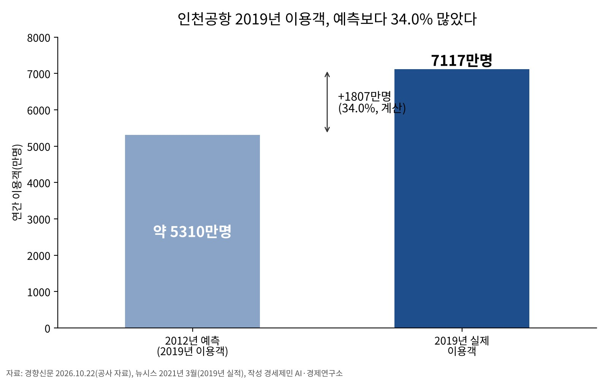
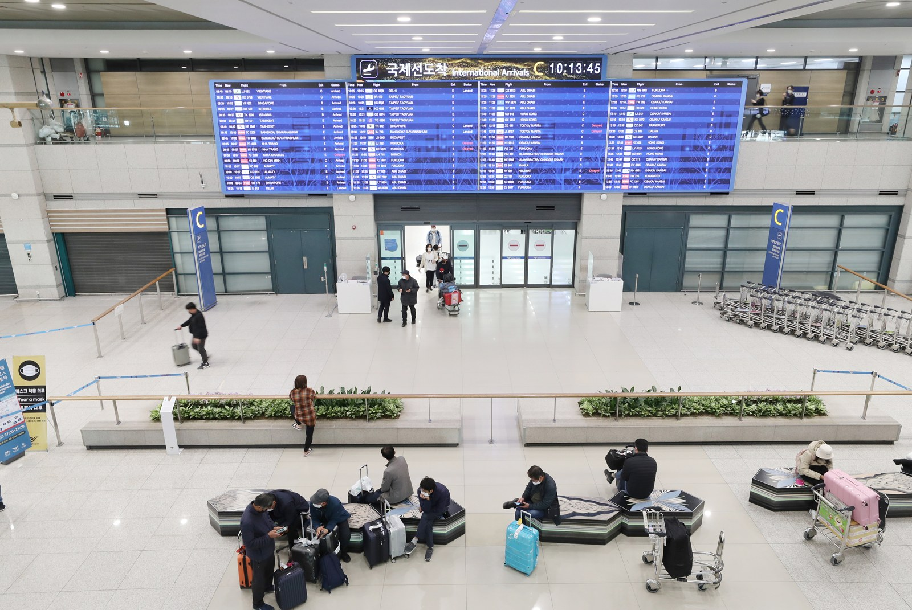

[글로벌 인천공항⑱] 정일영 의원, 인천공항 5단계 제7차 계획 반영 요구
2019년 이용객 예측 5310만명(경향), 실제 7117만명(공사 자료)
창이공항 T5는 2년 멈췄다 재개, 두 단계 설계(2022년 답변)
제7차 계획 11월 발표 예정, 5단계 일정 명시 요구
AI경제저널=김갑봉 기자 | 정일영 의원(더불어민주당, 인천 연수을)이 2026년 10월 22일 국정감사에서 5단계 건설사업을 제7차 공항개발종합계획에 반영하라고 요구했다.
정 의원은 인천국제공항공사 사장을 지냈다. 경향신문에 따르면 5단계는 제3여객터미널과 제5활주로를 신설하는 사업이다.
2019년 예측 5310만명, 실제 7117만명
경향신문이 보도한 국정감사 자료를 보면 공사가 2012년에 예측한 2019년 이용객은 약 5310만명이다.
실제는 약 7100만명으로 차이가 1790만명(33.7%)이다. 인천일보는 공사 자료를 인용해 2019년 실적을 7117만명으로 전했고, 이 경우 차이는 1807만명(약 34%)이다.
뉴시스 2021년 3월 보도를 보면 인천공항 이용객은 개항 첫해인 2001년 1454만명에서 2019년 7117만명으로 늘었다. 개항 때 시설은 연간 3000만명을 처리하는 규모였다.
경향신문에 따르면 제2여객터미널이 열리기 전인 2016년과 2017년에도 연간 이용객이 당시 최대 처리 능력 5400만명을 넘었다. 제2여객터미널은 2018년 1월에 문을 열었다.

옵션 이론과 수요 예측 오차 연구
투자 시점과 예측 오차를 다룬 연구를 모았다. Dixit·Pindyck(1994)은 투자를 한번 하면 되돌리기 어렵고 앞날이 불확실한 점에 주목했다.
이 경우 더 나은 정보를 기다리는 값, 곧 옵션 가치가 생긴다고 정리했다. Smit(2003)는 이 이론에 게임이론을 결합해 유럽 공항 확장을 분석했다.
이 연구는 공항 투자가 다른 투자 기회를 만들고, 성장 규제를 덜 받는 인프라를 갖춘 공항이 가치를 더 많이 얻는다고 밝혔다. Flyvbjerg·Holm·Buhl(2005)은 14개국 교통 인프라 사업 210건을 분석했다.
도로 사업의 절반은 실제 교통량과 예측 교통량 차이가 ±20%를 넘었다. 철도 사업 10건 중 9건은 승객 예측이 실제보다 많았다. 30년 동안 예측은 더 정확해지지 않았다.
창이공항 T5, 2년 중단 뒤 재개(2022년 답변 기준)
싱가포르 교통부는 2022년 10월 5일 국회 서면 답변에서 코로나19로 창이공항 제5터미널(T5) 개발을 2년간 중단했다고 밝혔다.
그 뒤 항공 여행 장기 전망이 밝다고 보고 공사를 다시 시작했다. 교통부는 같은 답변에서 운영을 2030년대 중반에 시작할 예정이며 T5를 연간 약 5000만명 규모로 계획했다고 밝혔다.
교통량이 늘어나는 속도에 맞춰 두 단계로 나눠 지을 수 있게 설계했다. 장기적으로 연간 최대 7000만명까지 늘리는 선택지도 있다고 설명했다.
처리 능력 1억600만명, 5단계 이후 1억3100만명
인천국제공항공사 건설개요를 보면 4단계 사업은 2017년 11월부터 2024년 10월까지 84개월 걸렸다. 제4활주로 건설과 제2여객터미널 확장에 사업비 4조8405억원이 들었고, 연간 여객 처리 능력은 1억600만명이 됐다.
경향신문에 따르면 5단계가 끝나면 처리 능력은 1억3100만명, 운항 처리 능력은 83만회로 늘어난다. 사업비는 약 6조원이다.
경인일보는 2026년 7월 7일 공사 자체 분석 결과를 인용해 향후 이용객이 현재 처리 능력 1억600만명을 4%가량 웃돌 것이라고 전했다. 보도에는 전망 시점이 없다.

경향신문에 따르면 기존 시설 개량 일정도 잡혀 있다. 제1여객터미널은 2028~2035년 재단장이고 제4활주로와 제3활주로 개량은 각각 2031~2032년, 2032~2033년이다.
정 의원 요구, 포화 시점 2038년 서술은 엇갈려
경향신문에 따르면 정 의원은 제7차 계획에 5단계 사업의 추진 방향과 일정을 명시해야 한다고 주장했다.
공항은 이용객이 몰린 뒤 확충에 나서면 이미 늦다고 밝혔다. 국토교통부와 공사가 단계별 건설 일정, 재원 조달 방안, 기존 시설 개량 기간 운영 대책을 구체적으로 세워야 한다고도 주장했다.
같은 보도에서 정 의원은 지방 신공항으로 이전하는 기존 수요와 신규 수요를 구분하고, 신공항 개항이 늦어질 가능성도 수요 예측에 반영해야 한다고 지적했다.
인천일보는 정 의원이 지방공항 활성화와 경쟁력 강화를 함께 추진해야 한다고 말했다고 전했다.
인천일보 10월 22일자 정 의원 발언 기사는 포화 시점이 2033년에서 2038년으로 늦춰지는 방안이 검토되는지 확인해야 한다는 취지로 썼다. 이 기사는 2038년을 확정된 계획이 아니라 검토 여부를 확인할 전망치라고 전했다.
같은 신문의 다른 기사는 정부가 포화 시점을 2038년으로 잡았다고 썼다. 인천일보는 공사 자료를 인용해 인천공항 내국인 이용객의 87.7%가 수도권과 중부권에 산다고 전했다.
제7차 계획(2026~2030년)은 10월 22일 보도 기준으로 11월 발표 예정이다. 11월 7일 현재 발표 보도는 확인하지 못했다. 두 기사의 서술 차이와 국토교통부·공사의 입장은 이번 취재에서 확인하지 못했다.
참고문헌
기관 자료
- 싱가포르 교통부(2022). Written reply to parliamentary question on expected full completion and capacity of Changi Airport's Terminal 5(창이공항 제5터미널 예상 완공 시점과 수용 능력 국회 질의 서면 답변). 2022년 10월 5일. https://www.mot.gov.sg/news-resources/newsroom/written-reply-to-parliamentary-question-on-expected-full-completion-and-capacity-of-changi-airport-s-terminal-5/
- 인천국제공항공사. 4단계 건설사업(건설개요). 열람 2026년 10월 27일. https://airport.kr/co_ko/771/subview.do
연구 보고서와 논문
- Dixit, A. K., & Pindyck, R. S. (1994). Investment under Uncertainty. Princeton University Press. https://press.princeton.edu/books/hardcover/9780691034102/investment-under-uncertainty
- Smit, H. T. J. (2003). Infrastructure investment as a real options game: The case of European airport expansion. Financial Management, 32(4), 27-57. https://ideas.repec.org/a/fma/fmanag/smit03.html
- Flyvbjerg, B., Holm, M. K. S., & Buhl, S. L. (2005). How (in)accurate are demand forecasts in public works projects? The case of transportation. Journal of the American Planning Association, 71(2), 131-146. https://arxiv.org/abs/1303.6654
언론 보도
- 박준철(2026). 예상치 웃도는 인천공항 이용객…"5단계 건설사업 서둘러야!". 경향신문, 2026년 10월 22일. https://www.khan.co.kr/article/202610220934001/
- 김주엽(2026). 25년 만에 10억명 품은 인천공항… 세계 허브공항 새 역사. 경인일보, 2026년 7월 7일. https://www.kyeongin.com/article/1766902
- 라다솜(2026). [국감, 핀셋] 지방 신공항에 인천공항 확충 늦추나…정일영 의원 “국가계획 반영해야”. 인천일보, 2026년 10월 22일. https://www.incheonilbo.com/news/articleView.html?idxno=1334814
- 김기성(2026). 정일영 의원 “인천공항 5단계 확장, 종합계획에 담아야”. 인천일보, 2026년 10월 22일. https://www.incheonilbo.com/news/articleView.html?idxno=1334870
- 홍찬선(2021). '최고의 순간' 코로나 쇼크…인천공항, 파란만장 20주년. 뉴시스, 2021년 3월 20일 등록. https://www.newsis.com/view/NISX20210319_0001377001
사진 출처
- 사진1 활주로 전경, 사진2 제1여객터미널 입국장. 인천국제공항공사(2025). 공항 전경 및 이미지(공공데이터포털, 수정일 2025년 7월 17일), 공공누리 제1유형. https://www.data.go.kr/data/15130703/fileData.do
관련기사
- [글로벌 인천공항⑰] 인천공항 배당 3194억원, 2011년 매각대금 상임위 삭감
- [글로벌 인천공항⑯] SAF 감면 200편 1740만원, 구매비 지원은 예산안 밖
- [글로벌 인천공항⑮] 해외 항공기 4001대 들인 샤먼, 인천공항 정비도 남의 물량으로
- [글로벌 인천공항⑭] 한중 노선 국적사 몫 54%→46%, 베이징·상하이 늘려야
저작권자 © AI경제저널 무단전재 및 재배포, AI학습 및 활용 금지